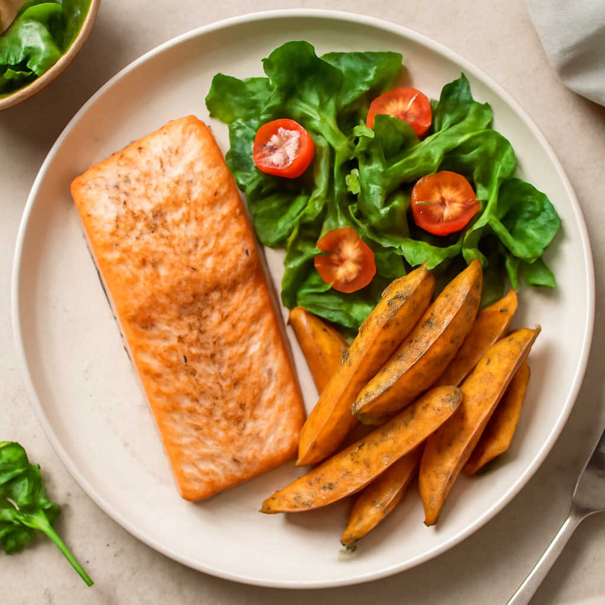

Tuesday — Baked Salmon with Sweet Potato Wedges

Cook Time:
35 minutes
Method:
Oven
salmon
sweet potatoes
healthy
Ingredients for 6
6 organic salmon fillets
4 organic sweet potatoes
2 tablespoons organic olive oil
1 teaspoon garlic powder
1 teaspoon paprika
Salt and pepper to taste
Mixed salad greens for serving
Instructions
Preheat oven to 400°F (200°C).
Slice sweet potatoes into wedges, toss with olive oil and seasonings, place on a baking sheet.
Bake sweet potatoes for 20 minutes.
Season salmon with olive oil, garlic powder, paprika, salt, and pepper, and place on a separate baking sheet.
Add salmon to the oven and bake for an additional 12-15 minutes.
Toddler Notes
Ensure salmon is flaked and bones are removed.
Cut sweet potatoes into smaller pieces for toddlers.
← Back to weekly plan